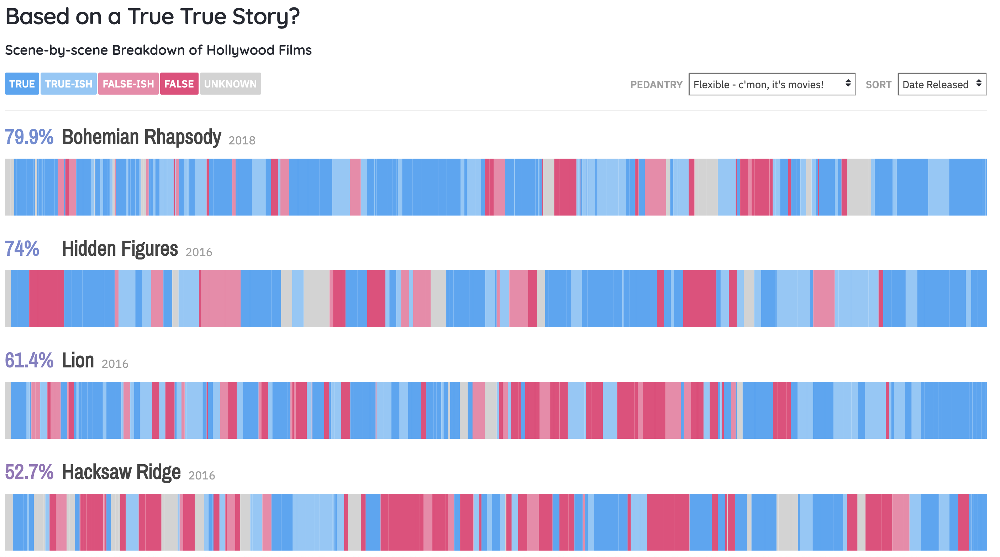

The Good, The Bad, and The Redesign
By Brishti Saha and Andrés Fernández
The Good
A Day in the Life of Americans
In this vis, each of the dots represent a singular person and
the colors represent the activity that they are doing. As time in the
simulation progresses (shown next to the model), dots move to new activities and
their color changes. At the same time, the vis is keeping track of what percentage
of the population is doing each activity, giving a complete overview. This approach
enlightened the writer of the article to take this visualization from American Time Use
Survey and make it even better by drawing lines that represent each dot’s path. The result makes it easier
to keep track of how a person transitions from one activity to another.
The visualization is insightful in showing a representation of what an average American does throughout
different times of the day. One possible problem with this representation is that some of the dots get
stuck between other dots that make up a large group. An example of this is early in the morning around
4am when the blue dots for self care are stuck within the dots for sleeping, making the cluster of dots
in the sleeping area larger. However, the visualization still portrays the correct colors and therefore,
does not intentionally mislead the viewers in any way.
Source: https://flowingdata.com/2015/12/15/a-day-in-the-life-of-americans
Based on a True Story

The intended audience of this visualization is any movie fan who is curious about how historically accurate
some popular film is. This visualization is not meant to show how accurate movies are in general, but
instead it is meant to show you moments of accuracy or inaccuracy in a movie you click on. This intention is
clear when you click on a movie: it gains color and the rest of the dataset turns monochrome. Upon clicking a
movie, you’re greeted with some well-executed visual encoding. First, the whole movie’s runtime is represented
horizontally, aligning with the user’s expectations (see: spotify, netflix, youtube, and how time is always
horizontal in those examples). It also uses three easily distinguishable colors and their shades to represent
whether or not a section of the movie is true or false instead of having a color for each shade. It even lets
the user examine why a section may be true or not through interactivity, leading to user discoveries. But what
if you aren’t interested in the specifics? Well, the percentage of “how accurate it is” is shown right before
the name; it’s the first and most important piece of data you’ll see. That number is why you’re checking the
website out so it’s not hidden from you. In fact, you can scroll down the monochrome website and glance at the
percentage and the name. Out of the picture, there’s two selection boxes the user can interact with: a
“flexibility” box and a “sort” box. The first can be used to make things more or less rigorous. This feature is
for the user that is interested in a no-gray-area historical accuracy. The sort feature lets the user browse
movies by how truthful they are. Ultimately, this visualization is good because of its well-executed visual encoding,
intuitive interactivity, and diverse options to interest all types of users.
Source: https://informationisbeautiful.net/visualizations/based-on-a-true-true-story
ABC New's Rich School, Poor School
This visualization is unique because it unfolds as you scroll down, instead of giving you all the data right away.
It’s very elegant because it often involves exploring a question (in this case, ‘how great is the divide in
Australia’s education’) at the user’s own pace. It’s a very “exploratory” form of visualisation. This gives it a
greater sense of intimacy with the user. But let’s talk about encoding. Notice how the image above has an “income”
axis. We learn that scrolling down leads to a decreasing income, as the green circle is below the income axis at
104.6m. We also know that the size of the circle is related to the income of the school, and we know that the color
corresponds to the type of school. These forms of encoding are very intuitive to the user: income, a quantitative
value, is mapped to size; type, a nominal value, is mapped to color; and movement downwards is linked to moving
down in the Y axis (or reducing the income). The visualization also contains text fields that to inform the user,
like the one above. Then, we reach the bottom. The vis went from having one circle on the screen, to a very high
amount. This increase in density is absolutely shocking, and it is very effective at showing just how many schools
have a low income. Keeping this fact hidden until the very end is brilliant; as the user scrolls, the density
increases and increases until they find this.
Source: https://www.abc.net.au/news/2019-08-13/rich-school-poor-school-australias-great-education-divide/11383384?nw
The Bad
Drinking Age in Saskatchewan
The audience for this visualization are the citizens of Saskatchewan provinces in Canada. The Saskatchewan Party
government used this visualization to justify not changing the drinking age from 19 to 18 since most provinces
in Canada have the drinking age set to 19. The visualization encodes the data in a bar chart, with the different
provinces on the x-axis and the age on the y-axis. The visualization clearly demonstrates that most provinces in
Canada have the drinking age set to 19 and there are only three provinces that have the age set lower at 18. Although
the bar chart manages to get the point across, there are definitely ways that this chart is misleading and therefore,
can be made better. The chart is misleading because the y-axis starts at 17 rather than 0 and contains increments of 0.6.
This odd increment is unnecessary since age is typically not used in terms of decimals but rather just a whole number.
The increments of the chart also makes it seem as though the difference between 19 and 18 is a lot larger than it actually
is, which is misleading readers to think the drinking age ranges greatly in different provinces. In addition, the grid
lines are unnecessary and makes the chart look less aesthetically pleasing. The bar chart also fails to show that the
two neighboring provinces to Saskatchewan have the drinking age set to 18, which may lead readers to disagree with the
decision made by the Saskatchewan Party government.
Source: https://www.businessinsider.com/the-27-worst-charts-of-all-time-2013-6#canada-what-are-you-doing-that-y-axis-scale-those-grid-lines-the-fact-that-you-are-just-saying-every-provinces-age-is-19-except-three-where-its-18-this-is-terrible-9
How Baby Boomers Describe Themselves
This visualization portrays how baby boomers describe themselves and is encoded in terms of percentage.
Although aesthetically pleasing with the human image shaded in different colors for each of the
descriptions, the visualization does not accurately portray the percentages since they do not add
up to 100%. The vertical lengths of the person also do not correspond with the percentages. The
visualization also does not take into account that different parts of the body vary in width and
may mislead the viewers. The visualization, therefore, does not serve its purpose of telling the
viewer the proportions of how baby boomers view themselves. The visualization also does not provide
much insight since it shows how baby boomers view themselves which would be a lot more insightful
if we can compare it to how others view baby boomers.
Source: http://livingqlikview.com/the-9-worst-data-visualizations-ever-created
Florida's COVID-19 Cases

Well this one’s a mess, isn’t it? First, it doesn’t take more than a few seconds to realize that
the data and the bar graphs are just flat-out disagreeing with each other. The first bar says “3,207”.
Ok. The second bar says “3,822” and is below the first. What? The third bar says “4,049”--the highest
number so far--and it’s the shortest bar on the entire graph. If we maintain this convention, “3,494”
should be between bars 1 and 2, right? Nope. It’s below “3,822” and “4,049”. Then the last bar, the
smallest number in the graph at “2,926”, is just below the first bar, when it should be just above if
this graph had an inverted Y-axis. It defies all consistency. But if we follow the bars to form a trend
(which is what most viewers will do), it looks like the cases have been rising since June 19th to June
21st. Hmmm I wonder what the agenda was here? And why are they using so many colors? They don’t serve
any functional purpose apart from distinguishing the days, but that’s already abundantly clear through
the outline of the bars. If anything, the color should be used for redundant encoding, where it gets
lighter as the number drops and darker as the number rises. There’s also the concern that this graph
is only using five days worth of data. Five data points is not nearly enough to start making real
conclusions about how things are going in Florida in the long term. This graph is being used to
manipulate an audience. It isn’t truthful, it isn’t beautiful or enlightening. It’s functional
and insightful but with ill-intent. The unique coloring catches the eye instantly and clearly
shows a rise in cases which should not be there, but was intended to.
Source: https://www.reddit.com/r/dataisugly/comments/iz5vcu/someone_tried_to_visualize_gradient_descent_it/
The Redesign
Saskatchewan
The third redesign redesign of the Saskatchewan province drinking age provides a
better visual representation of the drinking age in the different
provinces of Canada. This visualization is better than using a bar
chart because only two numbers, 18 and 19, are being
portrayed throughout the country and therefore, there is no need for
the majority of the y-axis. The redesign still portrays the same data
(the drinking age in each province) but the original bar chart makes it
more obvious that the majority of provinces in Canada have a drinking
age of 19. Despite this, this visualization is better because it shows the
three provinces which have the drinking age of 18 in relation to
Saskatchewan province in specific. The two provinces east and west
of Saskatchewan have the legal age set to 18, which is mentioned
in the article but not portrayed in the original visualization.
This is most likely because the original designer wanted the readers
to support the decision of the legal drinking age to remain 19 but had
to leave out some important information that may influence readers
otherwise. This redesign also gives readers, especially those not from
Canada, a perspective of how big the provinces are so they don’t just
assume all the provinces are equal in size and population. This new
visualization would also be misleading because readers would see
the sizes of the provinces and associate that with the majority of
Candadians but in actuality, ~40% of the population is from the
three provinces with the legal drinking age of 18.
Boomers
For the third redesign, I used the same concept of the original visualization
and portrayed my data in the shape of a man. This visualization would
allow the most popular characteristic to be the most apparent for viewers
when they first see the visualization. After the initial look, viewers can
then look at some of the other larger words. The larger words represent a
higher percentage of baby boomers who view themselves as this description.
This visualization would be better than the original since it would allow
the baby boomers to have multiple descriptions and there doesn’t need to
be a limit on the number of descriptions used. The one downside of this
visualization is that the readers would not know the exact percentages
of people voting for each description. However, readers can compare the
sizes of descriptions in relation to one another to determine which ones
are significantly more common than others.
Florida COVID-19
Of these three, my favorite is the line chart (2). With this one, I intended
to focus on emphasizing “rate of change” over total value. I used two colors:
gray (to clearly mark the data points) and orange (trace between the data points).
Doing this gets the eye to follow the line more than it does with the bar graph,
but asserts that the line is not a string of data points. Unlike the original,
my redesign accurately portrays the values on the x-y plane. It also includes a
clearly marked y-axis with 1,000 increments. I also did not manipulate the data
to try press my agenda: each data point was placed where it belongs. This redesign
does have an issue though: size. Each point is the same size, so the number of
cases is nearly the same visually. There is a y-axis indicating size, but a point
is not as effective as a full bar at conveying numbers or weight.